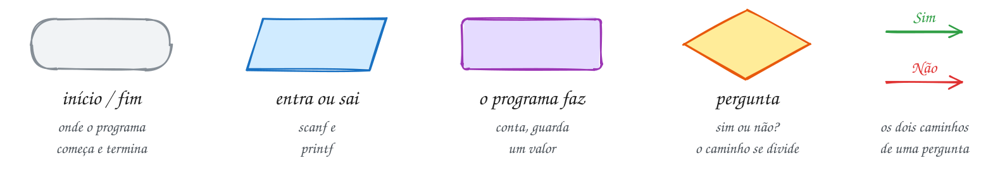

Um livro de estudo, em português, de lógica de programação, linguagem C e estruturas de dados, escrito para a Prova de Conhecimentos do Mestrado do PPGI/UFAM (edital 070/2026, prova em 27/11/2026). Começa no primeiro programa em C e vai até grafos, programação dinâmica e problemas NP-completos, sempre no nível que a prova cobra.
[!IMPORTANT] Para estudar até a prova, comece pelo plano dia a dia do guia do PPGI. A trilha de estudo mostra o que vem antes de quê.
O livro está dividido em partes e módulos. Cada assunto abre em um capítulo com número fixo
(0005 · printf) e segue a mesma ordem.
material/ com
o esqueleto e as dicas; resolva sem olhar a resposta, que fica em _respostas/.No fim de cada módulo vêm a lista do módulo, os desafios e as questões reais de prova com gabarito. A ordem do sumário é a ordem de estudo: os módulos com ★ são bônus e entram no ponto em que ajudam.
1. Módulo 01 · Fundamentos de C: compilar o primeiro programa, guardar valores em variáveis e mostrar resultados.
2. Módulo 02 · Decisões: fazer o programa escolher caminhos com if, else e switch.
3. Módulo 03 · Laços: repetir tarefas com while, do...while e for.
4. Módulo 04 · Funções e modularização: dividir o programa em funções, entender escopo e pilha de chamadas e usar recursão.
5. Módulo 05 · Vetores, matrizes e strings: guardar vários valores juntos e trabalhar com texto.
6. Módulo 06 · Ponteiros: enxergar endereços de memória e usá-los.
7. Módulo 07 · Memória dinâmica: pedir e devolver memória durante a execução, sem vazar.
8. Módulo 08 · Tipos compostos: agrupar dados com struct, union, enum e operações com bits.
9. Módulo 27 · Detalhes de C que caem em prova ★: dominar as pegadinhas de precedência, sinal e VLA que a prova cobra.
10. Módulo 09 · Arquivos e linha de comando: ler e gravar arquivos e receber argumentos na linha de comando.
11. Módulo 10 · Pensar como cientista da computação: medir o custo de um algoritmo e escrever tipos abstratos de dado.
12. Módulo 26 · Notação assintótica, somatórios e espaço ★: provar custos com O, Ω, Θ e somatórios.
13. Módulo 11 · Listas: montar listas encadeadas simples, duplas e circulares.
14. Módulo 12 · Pilhas e filas: usar pilhas, filas e deques.
15. Módulo 13 · Busca e ordenação: buscar e ordenar com os algoritmos clássicos e comparar seus custos.
16. Módulo 18 · Ordenação além da comparação e seleção: ordenar sem comparar: counting, radix e bucket sort.
17. Módulo 14 · Árvores: montar árvore binária, ABB, AVL e heap.
18. Módulo 22 · Árvores e conjuntos avançados: conhecer rubro-negra, árvore B, trie e union-find.
19. Módulo 15 · Tabelas hash: montar tabelas hash com encadeamento e endereçamento aberto.
20. Módulo 28 · Estruturas: o que faltava ★: fechar as lacunas de listas, árvores e hash que a prova cobra.
21. Módulo 16 · Grafos: representar grafos e percorrer com BFS, DFS e Dijkstra.
22. Módulo 23 · Grafos: estrutura e caminhos: ordenar topologicamente, achar árvore geradora mínima e caminhos mínimos.
23. Módulo 29 · Grafos: ciclos e cortes; problemas difíceis: separar problemas fáceis dos NP-completos e entender aproximação.
24. Módulo 17 · Medindo algoritmos recursivos: resolver recorrências e aplicar o teorema mestre.
25. Módulo 19 · Enumeração e backtracking: explorar todas as soluções com poda.
26. Módulo 20 · Divisão e conquista e algoritmos gulosos: dividir para conquistar e escolher o melhor local.
27. Módulo 21 · Programação dinâmica: guardar subproblemas repetidos para ganhar velocidade.
28. Módulo 24 · Busca de padrões em texto: achar padrões em texto com KMP, Horspool e Rabin-Karp.
29. Módulo 25 · Estruturas especiais: conhecer matriz esparsa, skip list e listas autoajustáveis.
Para treinar no ritmo da prova:
sudo pacman -S --needed base-devel gdb valgrind git # Arch Linux
sudo apt install build-essential gdb valgrind git # Debian / Ubuntu
git clone https://github.com/jhollyfer/LPEDC ~/LPEDC
No Windows, use o WSL com Ubuntu (wsl --install). No macOS, xcode-select --install.
Para rodar um arquivo (o -o dá o nome do executável):
gcc ~/LPEDC/material/A003.c -o ~/LPEDC/material/A003 && ~/LPEDC/material/A003
Para mandar a entrada sem digitar, ou passar argumentos:
gcc ~/LPEDC/material/A011.c -o ~/LPEDC/material/A011 && printf '25\n' | ~/LPEDC/material/A011
gcc ~/LPEDC/material/A137.c -o ~/LPEDC/material/A137 && ~/LPEDC/material/A137 um dois tres
Flags de estudo: acrescente -std=c17 -Wall -Wextra -pedantic -g -fsanitize=address,undefined -lm
antes do -o. O compilador passa a apontar a linha de erros de memória e de estouro de inteiro.
Para vazamento difícil, use valgrind no executável compilado com -g. Assuntos com TAD têm .c de
apoio (0076-lista.c); o comando do exemplo já os inclui.
Azul é dado entrando ou saindo, roxo é o programa agindo, amarelo (losango) é pergunta, verde é o caminho seguido, cinza o que não é usado e vermelho é erro.

O texto foi escrito do zero com base nos fichamentos em _fontes/. Cada conceito cita
a obra; a referência completa fica em "Para ler mais", no fim de cada módulo:
Para editar o material, altere os textos-fonte em _gerador/modulos/ e rode o gerador.
Consulte as regras de escrita e as instruções do projeto.
cd _gerador && npm install
npm run gerar # tudo
npm run gerar -- 03- # só o módulo 03
A fonte Excalifont (_gerador/fonte/) vem do projeto Excalidraw, sob a licença SIL Open Font License.